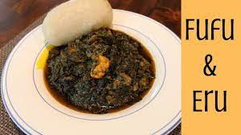

fufu and eru

fufu and eru is vegetable soup made up of finely shredded leaves of the eru or okok.
The eru is stewed with waterleaf or spinach, palm oil, crayfish, and either smoked fish, cow skin (kanda) or beef. This dish is traditionally eaten with fermented water-fufu or garri.
Ingrendients
- eru leaf
- waterleaf
- crewfish
- smoked or fresh meat
- kanda
- smoked fish
- palm oil
Steps in Preparing Fufu and Eru
- wash already cute eru and waterleaf
- boil the meat and fish
- add already wash eru and water and to the boiling meat and fish
- fix and cute meat and fish
- select the crew fish and grain
- put the eru and waterleaf to boil
- add the fish and meat